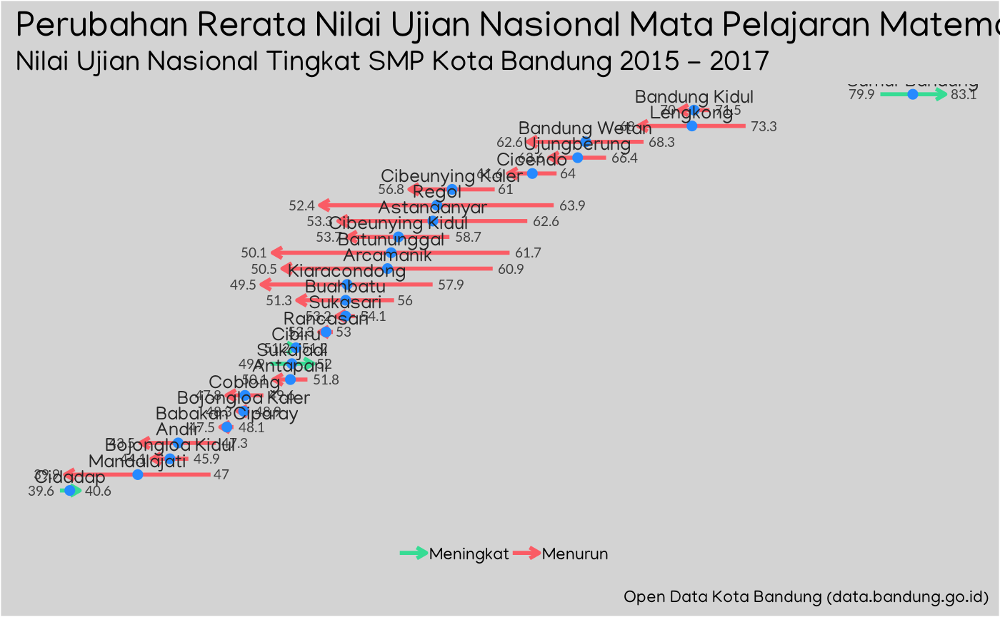
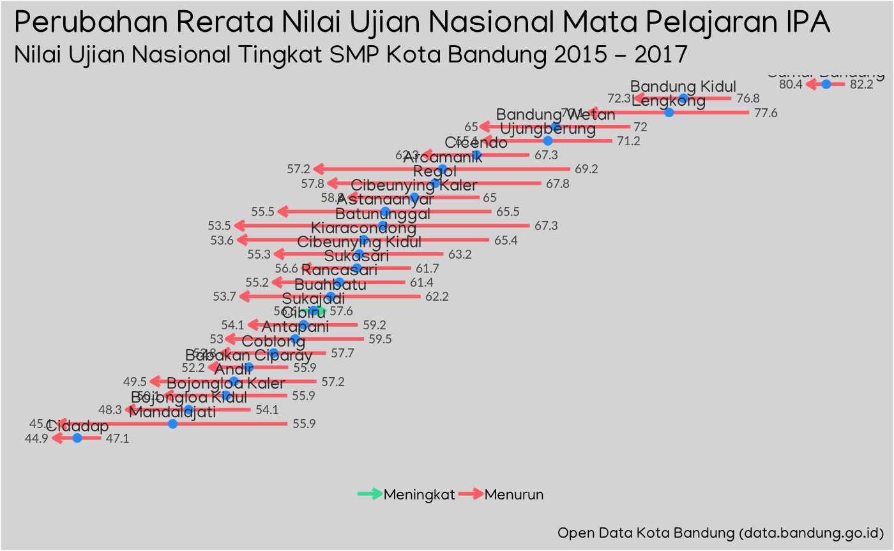
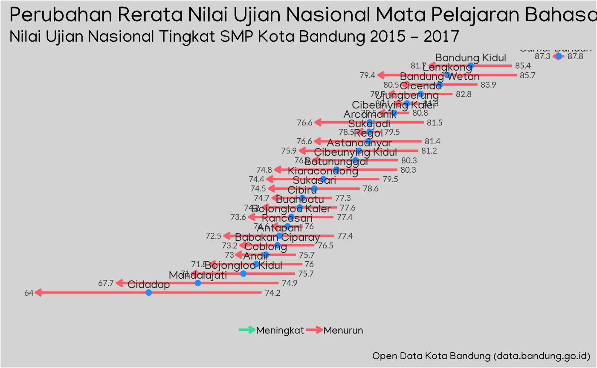
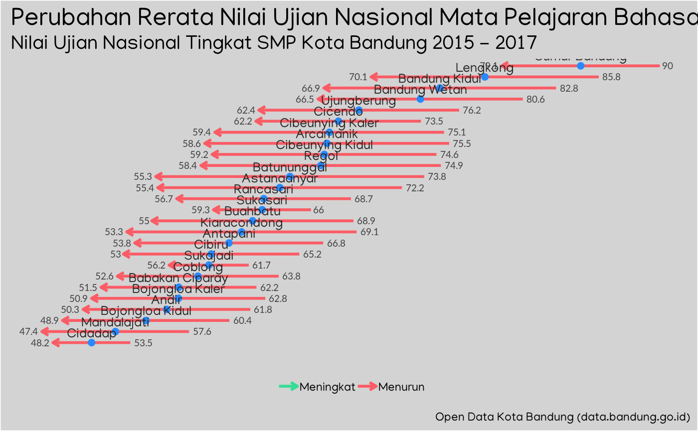

vignettes/ujian-nasional-smp.Rmd
ujian-nasional-smp.Rmdlibrary(bandungjuara)
library(tidyverse)
#> ── Attaching packages ───────────────────────────── tidyverse 1.2.1 ──
#> ✔ ggplot2 3.1.0 ✔ purrr 0.3.0
#> ✔ tibble 2.0.1 ✔ dplyr 0.8.0.1
#> ✔ tidyr 0.8.2 ✔ stringr 1.4.0
#> ✔ readr 1.3.1 ✔ forcats 0.4.0
#> ── Conflicts ──────────────────────────────── tidyverse_conflicts() ──
#> ✖ dplyr::filter() masks stats::filter()
#> ✖ dplyr::lag() masks stats::lag()un_smp <-
cari(kata_kunci = "smp") %>%
filter(
nama %in% str_subset(nama, pattern = "Ujian Nasional")
) %>%
impor() %>%
bind_rows(.id = "nama_dataset")
#> Berhasil menemukan dataset dengan dengan kata kunci: smp
#> Semua dataset berhasil diunduh!
glimpse(un_smp)
#> Observations: 159
#> Variables: 11
#> $ nama_dataset <chr> "Data Hasil Ujian Nasional SMP Neg…
#> $ npsn <dbl> 20219337, 20219332, 20219331, 2021…
#> $ nama_sekolah <chr> "SMP NEGERI 1", "SMP NEGERI 10", "…
#> $ nama_wilayah <chr> "Bojonagara", "Karees", "Karees", …
#> $ nama_kecamatan <chr> "Cicendo", "Regol", "Regol", "Suka…
#> $ nama_kelurahan <chr> "Arjuna", "Pungkur", "Ciateul", "G…
#> $ tahun <dbl> 2015, 2015, 2015, 2015, 2015, 2015…
#> $ nilai_rerata_bahasa_indonesia <dbl> 86.52, 78.45, 81.31, 84.87, 86.49,…
#> $ nilai_rerata_bahasa_inggris <dbl> 82.32, 70.27, 74.67, 79.91, 87.40,…
#> $ nilai_rerata_matematika <dbl> 76.55, 62.49, 59.14, 69.84, 76.78,…
#> $ nilai_rerata_ipa <dbl> 76.85, 64.79, 66.04, 71.68, 80.62,…nilai_kecamatan <-
un_smp %>%
group_by(nama_kecamatan, tahun) %>%
summarise_at(
vars(nilai_rerata_bahasa_indonesia:nilai_rerata_ipa),
~mean(.x)
) %>%
ungroup()
nilai_kecamatan
#> # A tibble: 78 x 6
#> nama_kecamatan tahun nilai_rerata_ba… nilai_rerata_ba… nilai_rerata_ma…
#> <chr> <dbl> <dbl> <dbl> <dbl>
#> 1 Andir 2015 76 61.8 47.3
#> 2 Andir 2016 77.4 59.7 40.8
#> 3 Andir 2017 71.8 50.3 43.5
#> 4 Antapani 2015 77.4 66.8 51.8
#> 5 Antapani 2016 78.8 68.5 47.2
#> 6 Antapani 2017 72.5 53.8 50.1
#> 7 Arcamanik 2015 81.5 75.5 60.9
#> 8 Arcamanik 2016 81.4 69.7 50.7
#> 9 Arcamanik 2017 76.6 58.6 50.5
#> 10 Astanaanyar 2015 81.2 72.2 62.6
#> # … with 68 more rows, and 1 more variable: nilai_rerata_ipa <dbl>buat_grafik <- function(.data, matpel, tahun_awal, tahun_akhir, judul = "Perubahan Rerata Nilai Ujian Nasional", subjudul = "Nilai Ujian Nasional Tingkat SMP Kota Bandung") {
matpel <-
matpel %>%
str_replace_all(pattern = "[:punct:]|[:space:]", replacement = "_") %>%
str_to_lower()
.data %>%
select(nama_kecamatan, tahun, contains(matpel)) %>%
filter(tahun %in% c(tahun_awal, tahun_akhir)) %>%
spread(key = "tahun", value = str_c("nilai_rerata_", matpel)) %>%
rename("awal" = 2, "akhir" = 3) %>%
mutate(
rerata = (awal + akhir)/2,
status = if_else(akhir - awal > 0, "Meningkat", "Menurun"),
status = factor(status, levels = c("Meningkat", "Menurun"))
) %>%
ggplot() +
geom_segment(
aes(
x = awal,
xend = akhir,
y = fct_reorder(nama_kecamatan, rerata),
yend = fct_reorder(nama_kecamatan, rerata),
colour = status
),
arrow = arrow(length = unit(2, "mm")),
lwd = 1
) +
geom_point(
aes(
x = rerata,
y = fct_reorder(nama_kecamatan, rerata)
),
colour = "#268AFF",
size = 2
) +
geom_text(
aes(
x = awal,
y = nama_kecamatan,
label = round(awal, 1),
hjust = if_else(status == "Meningkat", 1.2, -0.2)
),
family = "Lato",
color = "gray25",
size = 2.5
) +
geom_text(
aes(
x = akhir,
y = nama_kecamatan,
label = round(akhir, 1),
hjust = if_else(status == "Meningkat", -0.2, 1.2)
),
family = "Lato",
color = "gray25",
size = 2.5
) +
geom_text(
aes(
x = rerata,
y = nama_kecamatan,
label = nama_kecamatan,
vjust = -0.6
),
family = "Manjari",
color = "gray15",
size = 3.5
) +
labs(
title = judul,
subtitle = subjudul,
caption = "Open Data Kota Bandung (data.bandung.go.id)"
) +
scale_colour_manual(values = c("Meningkat" = "#37DC94", "Menurun" = "#FA5C65"), drop = FALSE) +
theme(
panel.background = element_rect(fill = "lightgrey"),
plot.background = element_rect(fill = "lightgrey"),
legend.background = element_rect(fill = "lightgrey"),
legend.key = element_blank(),
legend.title = element_blank(),
legend.position = "bottom",
axis.ticks = element_blank(),
axis.title = element_blank(),
axis.text = element_blank(),
panel.grid = element_blank(),
plot.title = element_text(
family = "Manjari",
size = 19
),
plot.subtitle = element_text(
family = "Manjari",
size = 15
),
plot.caption = element_text(
family = "Manjari",
size = 9
),
legend.text = element_text(
family = "Manjari",
size = 9
)
)
}buat_grafik(
.data = nilai_kecamatan,
matpel = "matematika",
tahun_awal = 2015,
tahun_akhir = 2017,
judul = "Perubahan Rerata Nilai Ujian Nasional Mata Pelajaran Matematika",
subjudul = "Nilai Ujian Nasional Tingkat SMP Kota Bandung 2015 - 2017"
)
buat_grafik(
.data = nilai_kecamatan,
matpel = "ipa",
tahun_awal = 2015,
tahun_akhir = 2017,
judul = "Perubahan Rerata Nilai Ujian Nasional Mata Pelajaran IPA",
subjudul = "Nilai Ujian Nasional Tingkat SMP Kota Bandung 2015 - 2017"
)
buat_grafik(
.data = nilai_kecamatan,
matpel = "bahasa indonesia",
tahun_awal = 2015,
tahun_akhir = 2017,
judul = "Perubahan Rerata Nilai Ujian Nasional Mata Pelajaran Bahasa Indonesia",
subjudul = "Nilai Ujian Nasional Tingkat SMP Kota Bandung 2015 - 2017"
)
buat_grafik(
.data = nilai_kecamatan,
matpel = "bahasa inggris",
tahun_awal = 2015,
tahun_akhir = 2017,
judul = "Perubahan Rerata Nilai Ujian Nasional Mata Pelajaran Bahasa Inggris",
subjudul = "Nilai Ujian Nasional Tingkat SMP Kota Bandung 2015 - 2017"
)